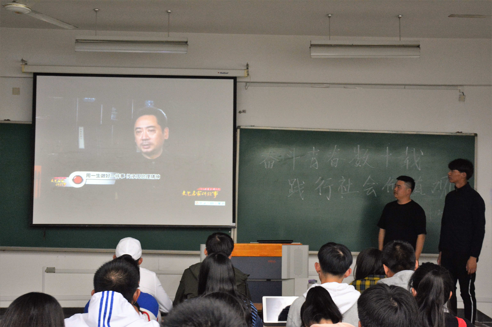
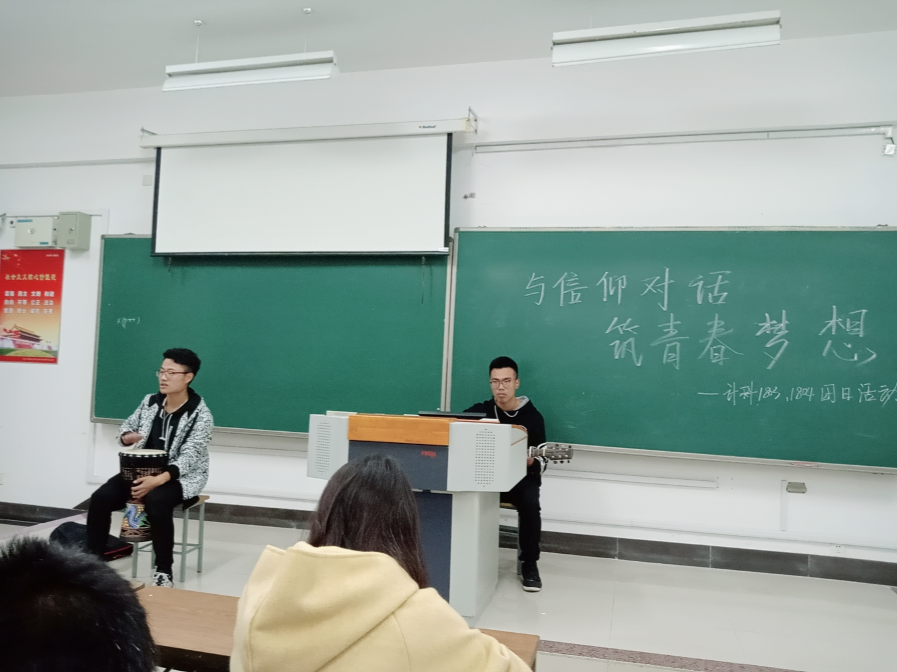
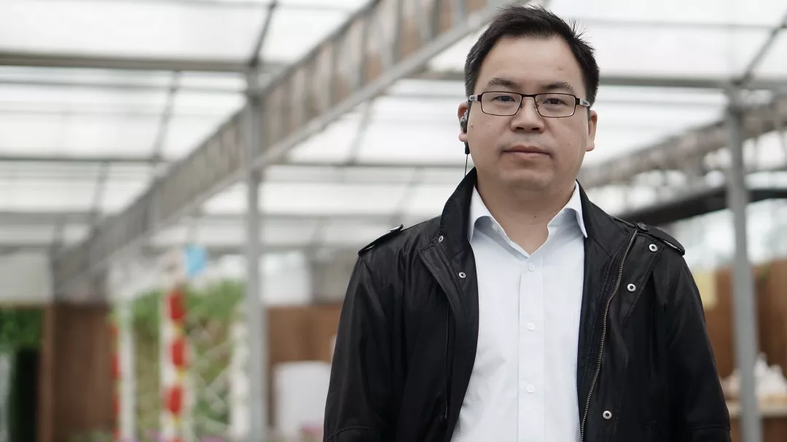
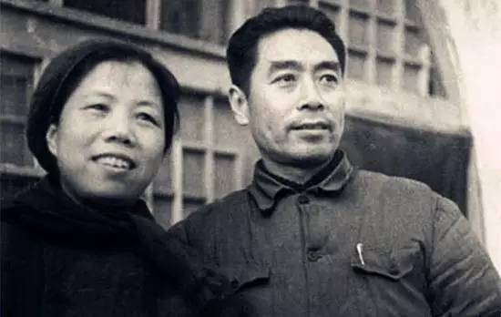
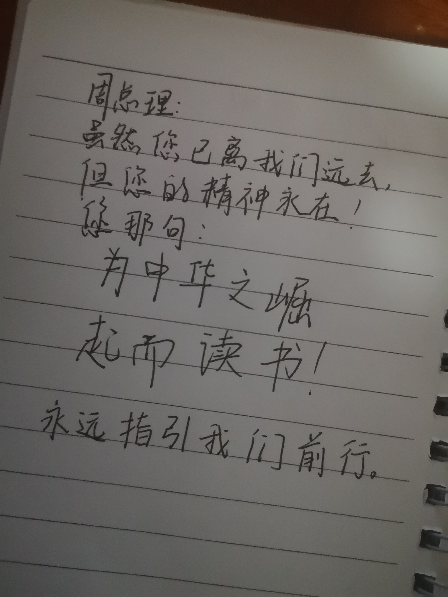
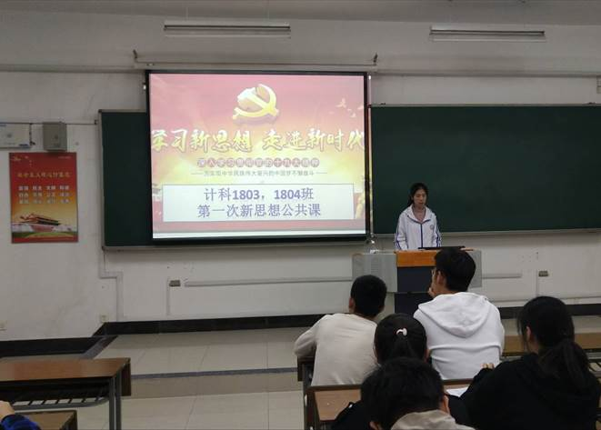

计科1804 班级介绍
周恩来曾说：青年是黄金时代，要学习、学习、再学习。
我们是来自五湖四海的青年，每个人怀揣着自己的梦想，顺着少年漂流的痕迹，来到了淮师，与杨海东老师一起组成了1804班。从此搭上了乘风破浪、扬帆远航的船。我们知道学习的道路从来不是一帆风顺的，我们要面对许许多多的惊涛骇浪、鲸波鼍浪。但周总理说过：一帆风顺是不能磨练人的。因此面对苦难，我们不怕磨练，我们甚至欢迎磨练。杨海东老师作为带领我们远航的船长，带领着我们乘风破浪，我们终究会闯出属于一片自己的晴天。
为中华之崛起而读书，我们1804班每个人都始终牢记着周总理的教诲。我们在学习中努力拼搏，奋发向上。我们的班级成绩，始终在年级名列前茅。我们不断地在夯实自己的基础，挑战自己，突破自己。张中兰，王腾飞同学，在中国大学生设计大赛获奖。王书豪同学在全国大学生英语比赛获奖。韩传虎、王国栋等同学，努力学习算法知识，为接下来的蓝桥杯而奋斗。我们每个人都在利用自己的黄金时间，学习、学习、再学习。
身体是革命的本钱，青年，是强健身体的时候。我们积极参加体育健康锻炼，强身健体。我们在校运动会上出力尽力，展现我们强健的体魄。我们组织参加院级篮球比赛，展现我们矫健的身姿。运动场上，总有我们的身影，周总理的精神需要我们用强健的体魄传承下去。
我们劳逸结合，充实自己的校园生活，积极组织班团活动，促进交流，增加班级的凝聚力。班级组织去周恩来纪念馆，学习周恩来的精神，树立正确的人生价值观，奋斗观。我们参加周恩来书籍的研讨会，拓宽自己的眼界，深入的了解周总理的一生。我们经常组织班团活动，交流自己的不同阅历，探讨经验。我们每个人都在努力，使班级充满书香气息，充满活力等。
青年人没有不栽几个跟头的，没有不碰几个钉子的。碰了钉子以后，不要气馁。我们从不害怕跟头、钉子。因为我们有梦想，我们在一步一个脚印的朝着自己的梦想努力前行。我们或许会走的很慢，但我们绝不回头。我们终将会成为优秀的科技人才，成为优秀的软件工程师，优秀的开发者、优秀的架构师等。我们终将会创出一片属于自己的晴天。
我们的眼眸中有星辰，心中有海。从此以梦为马，不负韶华，吾尽吾心，终亦无悔。
个人
风采
优秀的人懂得挖掘自己，展现自己。
在班级中，有这样一些同学，他们就是这样优秀的人，也最让同学们钦佩，是同学们的榜样

李渐静
做颗星星，有棱有角，还会发光！李渐静，预备党员，现担任班级宣传委员。曾获得一次二等奖学金，一次三等奖学金。在大一这一学年里，因担任班级团支书的缘故，我同班委们一起讨论组织了各种各类的pu活动，丰富了校园生活，促进了大家的友谊，并荣获优秀团支书的称号。同时，我也积极参加学院的各色活动，如演讲比赛，周恩来读书分享会，银舟宣传，这不仅使得我的身心得到了发展，也使得我的能力得到了提高。 当然，在学习中，我会和舍友相约着去图书馆自习。在课业不繁忙的时候，我们还会宿舍结群出去聚餐，一同庆祝节假日。因此，大学的生活对我来说非常的有意义，我希望在接下来的时光中，能做好自己，努力学习，充实自己，为未来做好准备！
倪珂
往者不可谏，来着犹可追现任班级团支书一职，获得过一次三等奖学金一次二等奖学金。此外我还参加过春雨义卖活动，一二九大合唱，新生迎新等集体活动。我热爱集体，乐于助人，也热爱运动。我也是我们计科女篮的一员，我的课外生活也因此丰富多彩。我从不喜欢做一个单调的人，我喜欢了解学习事物，接受新挑战。
王书豪
将喜欢的一切留在身边 这便是努力的意义我是王书豪，计科1804班的一员，在班级担任班长一职，学生会担任生活部副部长一职。在过去的一年的大学生活中，我秉着学习生活两不误的态度，在校内获得两次一等奖学金，获得“优秀志愿者”，“优秀团员”等称号，并在2019年获得全国大学生英语竞赛二等奖，除此之外，我还参加了党员发展对象的学习，这使我向党的大门又迈进了一步。 大学的生活对于我来说，是充实的，希望在接下来的日子里，我可以做好自己，为未来做准备。
张中兰
当你站在大多数人那边时,你就该想想自己是不是错了。我性格开朗、思维活跃;做事有责任心,条理性强;易与人相处,对工作充满热情,勤奋好学,敢挑重担,具有很强的团队精神和协调能力。在为人方面,我诚实善良、开朗自信,能够吃苦。在生活中,我尊敬他人,能够和别人友好相处。
朱玉龙
快乐之道不仅在于做自己喜欢的事，还在于做自己该做的事。勤劳好学，有着很强的集体荣誉感和突出的班队管理能力,被学校评为“优秀班干部”,在班级生活中,她尊重师长,和同学们和睦相处,主动帮助那些有困难的学生。可谓是德艺双馨爱助人，不辞劳苦为大家。勤奋刻苦喜钻研，衣着朴素不浮夸。德智体美齐发展的优秀学生。
唐齐帆
酌贪泉而觉爽，处枯澈而相欢。曾任班长，院、校组织部干事，银舟外联部副部，校129晚会二等奖，优秀学生干部，先进个人，优秀运动员，军训标兵，辩论赛一等奖，吉他弹唱二等奖，篮球赛一等奖，校二等奖学金两次。 学会总结是一种智慧。也许，我们天生就没有太高的智商，但我们知道去总结，知道总结自己，同时还知道去总结别人，去劣从优，吸取一切，积累一切有益的经验，融会我们的智商，丰富我们的智慧，成为一个易于生活的人。
团队
风貌
一花独放不是春，我们1804班的每一员都在为班级贡献自己的一份力，
积极参与班团活动，让我们的团队充满活力。

周总理故居行
周恩来总理，是一名伟大的马克思主义者，无产阶级革命家，政治家，是中国共产党人的优秀代表和精神楷模，正如习近平总书记所言，周恩来总理是中华民族的一颗巨星，而我们，想要做那环绕着巨星的群星，被他映照，自我闪耀。
- 
奋力拼搏数十载，践行社会价值观
为了让大家更好的树立正确的奋斗观念，更好的了解社会主义核心价值观，计算机科学与技术学院1803、1804班的唐齐帆、潘子杰在2018年10月28日组织此次主题为“奋力拼搏数十载，践行社会价值观”的团日活动。
- 
与信仰对话，筑青春梦想
为了让同学们更好地了解我们的大学，更好地在这四年中成就自己，我们又迎来了又一次的团日活动。与信仰对话，我们根据《中国合伙人》的片段，来引出了我们对信仰，我们对青春，对未来，对梦想的畅想。
- 
【优秀班主任】1804班班主任杨海东
杨海东，1973年生，淮阴师范学院计算机科学与技术学院教师，1804班班主任。专业方向：计算机网络理论、WEB设计与开发编程，电子商务领域，个人爱好：摄影、乒乓球等。
这盛世，如你所愿
今年的3月5日是敬爱的周恩来总理诞辰122周年的纪念日，他逝世后的40多个春秋过去了，他的身影不仅没有远去，而且愈加清晰。他的风度、气质、行为和举止，他的人格、情操、精神和信念，深深地印在人民心中。
周总理夫妇别样情书
——读《周恩来邓颖超通信选集》心得
- 
《忠诚的无产阶级革命家，忠诚的爱情伴侣》
读《周恩来邓颖超通信选集》有感
- 
这盛世如你所愿-小纸条
这盛世如你所愿
.jpg)
心连心，抗疫情-小纸条
心连心，抗疫情
- 
信仰公开课
学习新思想，进入新时代
为了积极响应党的号召，顺应时代需求，班级每周开展信仰公开课
班级
荣誉
在成长过程中，有风有雨，也有旭日晴空。 而我们，在杨老师的带领下，
无论是在风雨中无畏艰险地穿过，还是在旭日晴空下恣意挥洒青春的笔墨，都留下了这些珍贵的回忆，那是我们荣誉的勋章
{kind=link}
{kind=link}
{kind=link}